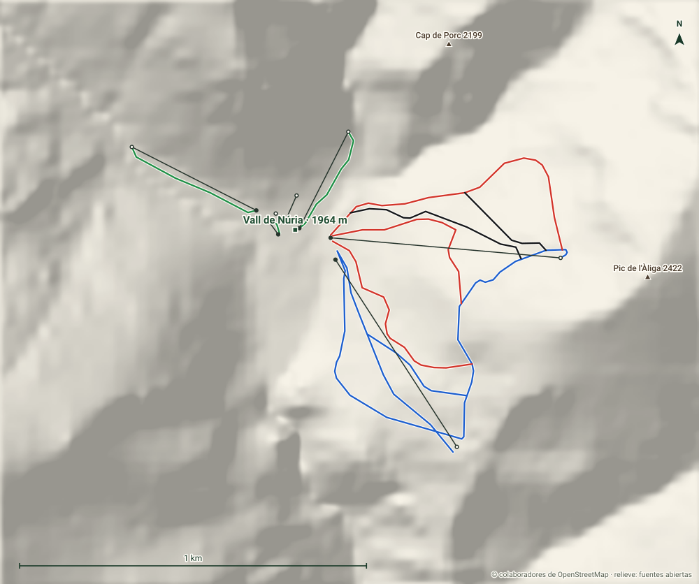

Vall de Núria
Ripollès · Girona
- Pistas
- 6 km
- 20 trazados
- Cota máxima
- 2259 m
- mínima 1964 m
- Desnivel
- 295 m
- esquiable
- Remontes
- 7
- 1 telecab. · 1 telesillas
Un valle sin carretera: solo se llega en tren cremallera desde Ribes de Freser o Queralbs. Pequeña, alta y pensada para familias.
Hoy
Vall de Núria ahora mismo
Estado de pistas y remontes según el último parte publicado, y las webcams de la estación.
Webcams
Estado y webcams de Infonieve.es, a partir de los partes y cámaras de cada estación. Antes de salir, confírmalo en la web oficial.
Próximos 7 días
Nieve y tiempo previstos
Previsión para la cota alta (2259 m) y la base (1964 m).
Previsión de modelos meteorológicos de Open-Meteo (CC BY 4.0). Es previsión, no observación: lo que hay abierto hoy está en el estado de pistas.
Plano
Plano de pistas
Pasa el cursor o toca una pista o un remonte para ver su nombre, longitud y desnivel.
Trazados: © colaboradores de OpenStreetMap (ODbL). No es el plano oficial de la estación ni refleja aperturas.
Mapa 3D
Vall de Núria en tres dimensiones
Relieve real, fotografía aérea, sol y sombras, viento e inclinación. Se carga solo cuando lo pides porque pesa.
Pantalla completa
Recomendado con wifi. En móvil, el mapa completo va mejor en la app.
Pistas
20 pistas, 6 km
La más larga con nombre es Mulleres (0,9 km, roja).
VerdeMuy fácil
3 pistas · 0,8 km
Ver nombres
- Finestrelles 0,4 km
- Eina 0,3 km
AzulFácil
11 pistas · 2,6 km
Ver nombres
- Funicular 0,5 km
- Les Creus 0,4 km
- Coma del Clot 0,4 km
RojaIntermedia
4 pistas · 2,2 km
Ver nombres
- Mulleres 0,9 km
- Del Bac 0,6 km
- Soleia 0,4 km
NegraDifícil
2 pistas · 0,8 km
Ver nombres
- Pala Bèstia 0,5 km
- Pala Boja 0,3 km
Remontes
7 remontes
El de mayor desnivel: Telacadira de la Pala, 288 m.
| Remonte | Tipo | Longitud | Desnivel | Llegada |
|---|---|---|---|---|
| Telacadira de la Pala | Telesilla | 666 m | 288 m | 2259 m |
| Telecabina Coma del Clot | Telecabina | 644 m | 149 m | 2118 m |
| Telesquí Cabana pastors | Telesquí | 311 m | 52 m | 2016 m |
| Telesquí Finestrelles | Telesquí | 403 m | 33 m | 2004 m |
| — | Telesquí | 74 m | 12 m | 1979 m |
| Cinta debutants Roc Malé | Cinta | 56 m | 3 m | 1969 m |
| — | Cinta | 32 m | 3 m | 1970 m |
Longitud en planta y desnivel sobre el modelo de relieve. No incluye horarios ni estado de apertura.
Guía práctica
Antes de ir a Vall de Núria
Cómo llegar
Ripollès, Girona. Coordenadas del dominio: 42,3966, 2,158.
Ver en OpenStreetMap · Cómo llegar en coche
En invierno comprueba el estado de la carretera y si hacen falta cadenas.
El terreno
- Base: Vall de Núria, 1964 m
- Ras de l'Ortigar, 2684 m
- Coll Herbat, 2485 m
- Rocs Blancs de Fontnegra, 2475 m
- Pic de l'Àliga, 2422 m
Enlaces oficiales
Forfaits, horarios y aperturas cambian durante la temporada: los publica la estación.
Vall de Núria sin cobertura
Descarga este mapa en la app para Android y úsalo en pistas aunque no haya red.